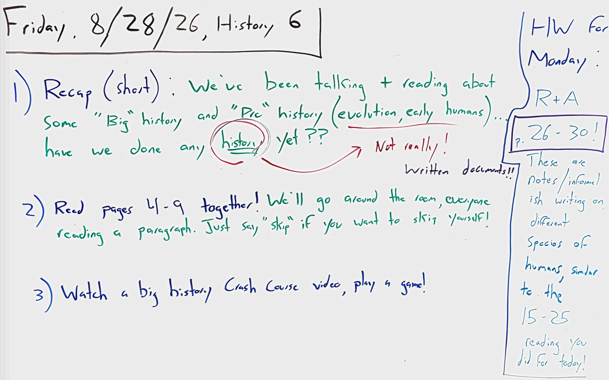

Friday, 8/28/26 MOST RECENT CLASS

Summary Of Class
- Quick recap of the "Big" history and "pre" history we've been studying... Have we actually done any history yet? Not really! 'History', as an academic discipline, needs written documents....the primary sources we're using for big history and pre history aren't writing!
- Read pages 4-9 together, going around the room a paragraph at a time.
- Watched a Crash Course Big History video on evolution, and played a game!
Homework: due Monday!
R+A pgs. 26-30!
Same early humans as 15-25, whole new details. Questions to keep in mind are on the Blackbaud assignment!
Board As Text
Friday, 8/28/26, History 6
1) Recap (short): We've been talking + reading about some "Big" history and "Pre" history (evolution, early humans)... have we done any history yet?? → Not really! Written documents!!
2) Read pages 4-9 together! We'll go around the room, everyone reading a paragraph. Just say "skip" if you want to skip yourself!
3) Watch a big history Crash Course video, play a game!
HW for Monday: R+A p. 26-30! These are notes/informal-ish writing on different species of humans, similar to the 15-25 reading you did for today!